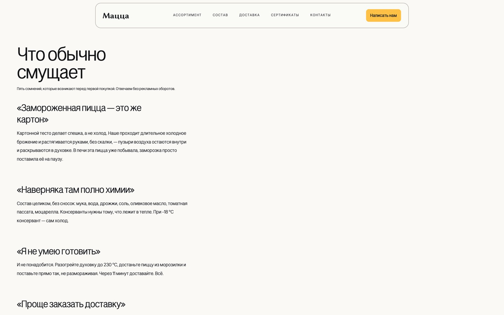
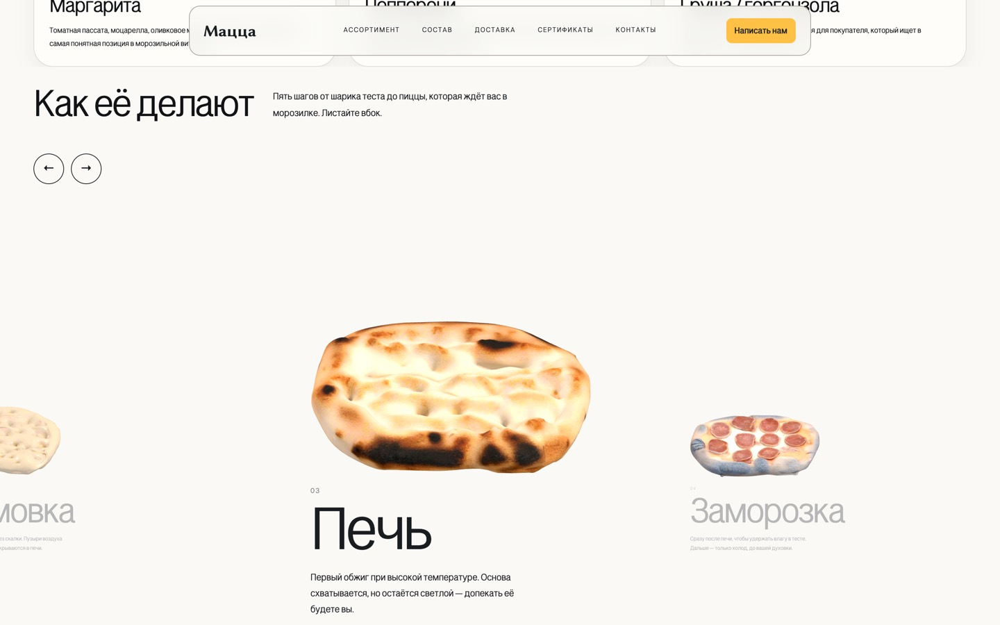
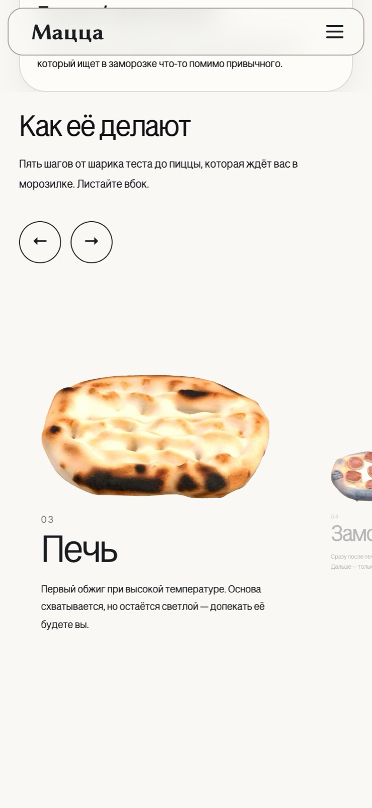

«Мацца» — замороженная римская пицца
Как я выбирал, кому продавать пиццу, которую ещё не начал производить. Продаж пока нет, поэтому в конце — что проверено, а что нет.
Ночное окно на чужом производстве
Я познакомился с владельцем производства десертов. Он предложил готовить пиццу у него по ночам, когда оборудование простаивает.
Вместе с шеф-пиццайоло Ильёй Галайдо мы разработали рецептуру и проверили её на площадке: римская пицца 330 г, тесто долгого холодного брожения, гидратация 75% двумя вливами. Дальше встал вопрос, кому это продавать.
Рестораны отпали из-за морозильников
Рестораны выглядели очевидным ответом: партнёр работает именно с ними, его логистика уже возит по всему Петербургу. Разбор отменил эту идею по трём причинам.
- Цена растёт с числом точек: чем больше адресов в рейсе, тем дороже каждая пицца.
- Клиентов трудно искать, и берут они мало.
- Главное — заморозку негде хранить: с местом в морозильниках плохо почти у всех.
Остались сети. Я не верю, что в одиночку разовью сильный бренд, а под собственной маркой сети роли понятнее: сеть отвечает за полку и спрос, производитель — за качество и объём. Свой бренд нужен как проба: на нём проверяются рецептура, упаковка, цена и спрос до разговора с сетью.
Узкое место — заморозка, а не печь
Я собрал финансовую модель, где объём выводится из спроса, а мощность его проверяет. Полка ВкусВилла держит около 410 ₽ за 330 г, и в эту цену можно уместиться.
Печь даёт 72 пиццы в час и ничего не ограничивает. Шоковая заморозка берёт 25 пицц за цикл, и смену задаёт она.
Что видно: печь за смену успела бы вчетверо больше, но всё упирается в морозильник. Покупать вторую печь бессмысленно. Цифры из модели: 72 пиццы в час у печи, 25 за цикл у заморозки. Длительность цикла пока допущение.
Безубыточность я считаю в двух режимах отдельно: работа в одиночку и смена с тремя работниками — разные бизнесы, и общая цифра врала бы обоим. Непроверенное в таблице выкрашено жёлтым и подписано словами. Ключевое допущение — 15 продаж с точки в неделю — помечено так же.
Сайт отвечает двум читателям
Закупщик открывает сайт до встречи или после и решает, серьёзные ли перед ним люди. Покупатель находит пачку на полке, ищет название и выясняет, что внутри и как это готовить.
Заказ идёт через личный разговор, поэтому сайт не продаёт. Он показывает состав, хранение и приготовление — и прочерки в реквизитах вместо выдуманного ИНН, пока ИП не зарегистрировано.
Товар встал перед презентацией
Первая версия открывалась презентацией приготовления: пять полноэкранных шагов от теста до готовой пиццы. Её делал я сам, и она мне нравилась. В этом и была ловушка: самая заметная часть сайта стояла турникетом перед тем, ради чего на сайт приходят.
Прокрути окно. В старой версии до первого товара шесть экранов, в текущей — один. Каждый кадр — это экран ноутбука, снятый с настоящей сборки сайта на эту дату.
Я отступал трижды. Сначала поставил презентацию сбоку от товара — модели перетягивали взгляд с карточек. Потом вынес её отдельной полосой после ассортимента, но полоса всё ещё захватывала прокрутку страницы. В конце отвязал её совсем: у полосы своя горизонтальная прокрутка, и смотреть её или проехать мимо — выбор читателя.
Каждое отступление отнимало у презентации власть — над вниманием, местом и прокруткой. И каждый раз она от этого работала лучше.
Сомнения словами покупателя
Перед первой покупкой человеку мешают не картинки, а сомнения. Я собрал пять и записал так, как покупатель говорит их про себя: «Замороженная пицца — это же картон», «Наверняка там полно химии», «Займёт всю морозилку». Ответы держатся за то, что уже есть на сайте, — состав, срок хранения, режим допекания. Новых обещаний я не придумывал: продукт ещё не продаётся, и отвечать за выдуманное было бы нечем.

3D вместо фотосъёмки
Съёмки продукта ещё не было, а на полке пачка встанет среди коробок с фотографией пиццы на крышке. Отсканированные 3D-модели закрывают обе задачи.
Пять моделей стадий я сжал с 21 МБ до 1,8 МБ — иначе сайт не открывался с телефона. Модели сняты только с лицевой стороны, поэтому покачиваются в пределах угла, за которым видно изнанку. Запрет на оборот выглядел помехой, а дал движение, которое мне нравится больше оборота.


Что проверено и что нет
Проверено
- Рецептура — на производстве партнёра
- Комплект документов: ХАССП, ТУ, технологическая инструкция, программа контроля, журналы
- Себестоимость — по закупочным ценам
- Инструкция на полной партии (100 пицц из 12,5 кг муки) — проверяется сейчас
Не проверено
- Всё, что касается спроса: 15 продаж с точки в неделю, 46 точек к концу года, цена сети
- Цикл шоковой заморозки
- Сайт не видел ни один закупщик
- ИП не зарегистрировано, название рабочее
Дальше: регистрация ИП, лабораторные испытания и декларация, первая полная смена с замером цикла заморозки, разговор с первой сетью. Сайт — lechatsergeev.github.io/rimsk.
Титры
- Рецептура
- Илья Галайдо, шеф-пиццайоло, и я
- Производство
- площадка партнёра, ночное окно, процент с выручки
- Документация, финмодель, сайт
- я
- Код сайта
- в паре с Claude Code